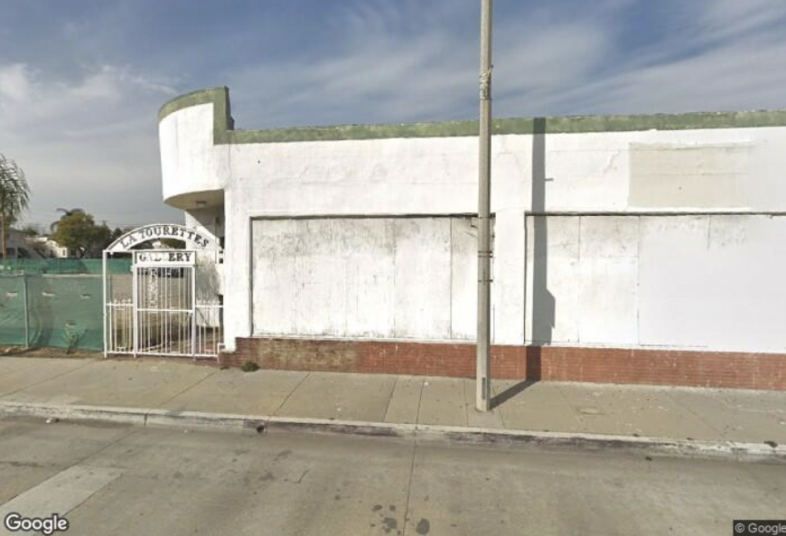

About Us
Established in Montebello, Segundo Books and Coffee is a space for students of all ages to do school work, research new topics, beginning projects, or reading in a cozy atmosphere. With Segundo having three floors, students are able to socialize and have a cup of coffee on the first floor. At the coffee shop, we serve breakfast, brunch, pastries, and of course, coffee! On the main floor we sell used books and Segundo merchandise. The second floor is dedicated to studying or reading. The second floor offers multiple study rooms, conference rooms, and a computer lab ready to be reserved for class projects, club meetings, or zoom calls. The floor contains multiple printers and IT students for any tech assistance. Lastly, the third floor is the quiet zone for students who prefer a quiet environment. We designed the building with the intention of helping students concentrate on their studies and encourage them to continue their education. Segundo was inspired by students from Montebello who noticed the importance of study spaces and accessibility for many students of the area.
Using Abandoned Space
The land where Segundo Books and Coffee will be built on used to be Montebello's "La Tourette's Gallery" that has been permanently closed for years. It has been up for lease for the past couple of years and a community of students from Montebello had thought it would be the best spot for our new space for students of all ages. It is located on Whittier Boulevard where people can walk to Segundo or commute via one of the Montebello Buslines. Segundo is located across the street from Montebello Bus Line 10: Whittwood Mall, which stops by Whittier, East LA college, Whittwood Mall, and more! With Segundo being walking distance to stores, restaurants, and the schools (Montebello High School, Montebello Intermediate, and Washington Elementary) it will provide great resources and experiences for Montebello Youth.
Opportunities for Montebello Youth
Montebello High Schoolers and college students have the opporunity to volunteer or work at Segundo! Training will be a must and we focus on the youth's strengths. Here at Segundo, we want people of Montebello to strengthen the skills they are best at and not be afraid to learn something new! We hold various events every month where everyone is welcome to attend and participate.
Resilience Criteria
Segundo Books and Coffee averages a 4 out of 5 energy score (system 3) in the Resilience Criteria assessment. Our energy supply is stable and consistent as we have a solar panneled rooftop to the building. Our Energy comes from local renewable resources, and we find it important to conserve as much as possible, using less lighting throughout the day and use natural sunlight. During closing hours, our building will be completely turned off. For when we need to use lights, we will be utilizing power-saving lightbulbs. We are also proud to say we are self-reliant, and that our community can supply and share energy in case of an emergency.

Segundo also averages 3 out of 5 Jobs and Economy score (system 5) in the Resilience Criteria. The resources that Segundo provides can contribute to community's well-being, such as offering training programs (college application program, volunteer services, etc.). We provide safe working conditions, fair business practices, and environmental stewardship. We ensure our workers of their worker's rights, including minors that may be working seasonal shifts. Because the majority of Segundo is self-reliant and many items are produced locally, Segundo provides sustainability in Montebello. For instance, we use Montebello's Promotional Graphics, Inc. for promotional items such as banners.
Montebello Resources
Montebello Bus Lines Resources: http://www.ridembl.com/Maps-Schedules